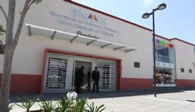
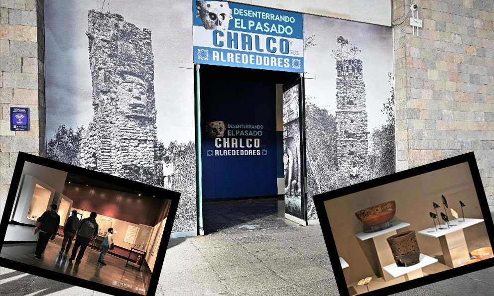

El museo contiene fotografías de la vida de Isidro Fabela así como algunos documentos históricos y reconocimientos, es una pequeña colección de objetos personales.
Dentro de este espacio también se pueden encontrar dibujos, pinturas y algunos otros objetos de arte, como una colección de acuarelas realizadas por el pintor J. Vicente Montiel, fechadas en 1856.
El Museo Arqueológico de Chalco se localiza en la Casa de Cultura Chimalpain en la avenida Cuauhtémoc, Colonia Centro. Fundada el 15 de noviembre de 1978. En esta casa de cultura se realizan varias actividades como clases de baile típico regional, ballet, dance, pop, ritmos latinos, canto, clases de teatro, entre otras más, así como, también ayudan impartiendo cursos de regularización por parte del INEA a los adultos mayores.
El Teatro de Chalco "Chichicuepon destacado poeta Náhuatl, nacido en Chalco, fallecido en el año 1486”, donde se realizan diversas actividades como la actuación, escenografía, entre otras, permitiendo la culturalización de la población en general, y dando al lugar un lugar de sana convivencia. Fue inaugurado durante el periodo del presidente municipal Vicente Alberto Onofre Vázquez (2006 -2009) , durante la ceremonia de inauguración privada tuvo lugar una presentación del cantante yucateco Armando Manzanero.
